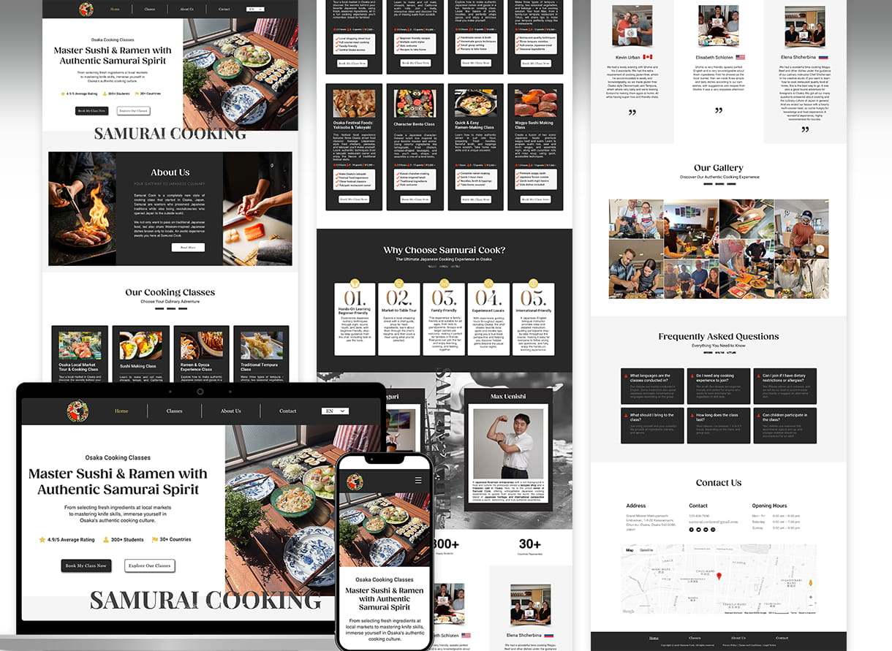
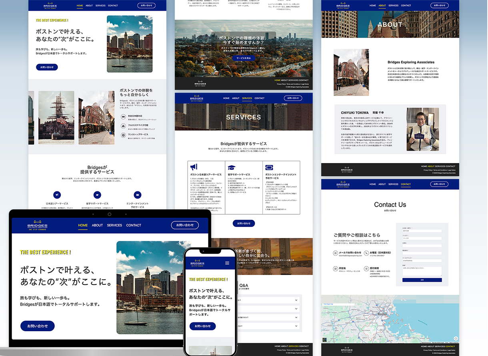

We asked for a website redesign. Our strengths — 30+ years in business and our project record — were made clear at a glance, and inquiries increased significantly. Design and copywriting were handled in one place, and we're very happy with the professional result.
Advantage IrrigationEnglish website · WordPress
★★★★★
It's rare to find anyone in Japan who can do serious SEO for overseas audiences. Thanks to her, bookings for our international offering have started coming in. She responded quickly and the work was meticulous — we're truly grateful.
Samurai CookEnglish website · SEO · Wix
★★★★★
Thank you for such careful, speedy work. She understood exactly what we were asking for in the design and delivered something of real quality — we're very satisfied. It was our first time using WordPress, but we could move forward with complete peace of mind.
Bridges Exploring AssociatesWebsite · WordPress
Sound familiar?
If any of these ring true, the right website can fix it.
You have a website, but nobody finds it.
A pretty site without SEO structure doesn't show up in search. Visibility has to be designed in.
You get traffic, but no calls or inquiries.
If visitors can't tell what to do next, they leave. Every page needs a clear next step.
Your template site feels a little cheap.
Templates are a starting point. Trust and brand personality only come through custom design.
You want to reach Japanese customers, but where to start?
Machine-translating your site won't land. Japanese users expect a different structure, tone and density.
Your last designer couldn't explain their choices.
When design is "just a feeling," every round of revisions drifts further from the goal.
The site launched — and then nothing.
Launch is the start. Without analytics and follow-up, you never learn what's actually working.
What I do
What I can build for you.
Every service here starts in the same place: understanding your customers before designing for them. Website, SEO, graphics or a bilingual launch — I research first, design with intent, and measure what happens after. One designer who explains every choice and cares about results as much as looks.
01
Web Design & Build
Not just a nice-looking site — one that gets found and gets you contacted. I design from your market data and analytics backwards, then build it so you can update it yourself.
Competitor & market research report
Site map and wireframes
Desktop and mobile design
Build on WordPress, Wix, Studio or hand-written code
Responsive coding, speed and Core Web Vitals
GA4, Search Console and Microsoft Clarity set-up
Training so you can edit your own site
Post-launch review and improvement proposals
Good fit if…
you want a site that works as a lead-generation tool, not just a business card — and you want to understand why it's designed the way it is.
Mauro Mafrici One Magnificent Mile · Chicago
02
SEO
Search data is the most honest signal of what customers want. I build SEO into the structure of your site from the first wireframe, in partnership with a former U.S. SEO vice president whose clients have included Adobe, The New York Times, GEICO and Staples.
Keyword and search-intent research for your market
Site structure, internal linking and page planning
Technical SEO: speed, mobile, indexing, Core Web Vitals
Local SEO for service-area businesses
Content plan and page briefs
Search Console monitoring and plain-English reporting
Good fit if…
you're a local or regional business that needs to show up when people search for what you do — and you'd rather earn traffic than rent it.

Samurai Cook · on Google 2 hrs after launch
03
Banners, Flyers & Graphics
Japanese design is known for layouts that carry a lot of information and still feel organized — and for finishing every pixel. If your business needs that level of detail, I'm trained for it. If you want clean and minimal, I do that too.
Web banners and ad creative in every size
Flyers, menus, posters and brochures
YouTube thumbnails and social graphics
E-books, guides and pitch decks
Instagram carousels and reels covers
Print-ready files and web-optimized exports
Brand consistency across every piece
Good fit if…
you want graphics with the care of a Japanese studio — dense when they need to be, elegant always — delivered fast.
Riverbend Charter School · Bake sale flyers
04
Japanese ⇄ English
I'm bilingual and have lived in both countries for years. For U.S. businesses reaching Japanese customers, or Japanese companies entering the U.S., I design and localize — not just translate — so the site reads naturally to the audience it's for.
English websites for Japanese businesses entering the U.S.
Japanese-language pages, menus and materials for U.S. businesses
Localization of layout, tone and imagery — not word-for-word translation
Japanese social graphics and banners
Bilingual communication with your Japanese partners or clients
U.S. SEO for Japanese companies, Japanese SEO basics for U.S. companies
Good fit if…
you serve Japanese customers, partner with Japanese companies, or are expanding across the Pacific in either direction.

Bridges Exploring Associates · Boston
How it works
Five steps, one point of contact.
01
Consultation
We clarify the goal, the audience and what's not working today — in plain words.
02
Research & analysis
Competitors, search keywords and relevant statistics — read before anything is designed.
03
Strategy & design
What to show, in what order, and why — grounded in behavioral psychology and data.
04
Build & launch
Every design is presented with its reasoning. I handle the build through to launch.
05
Measure & improve
Launch isn't the goal. We look at the data and keep improving what matters.
Let's talk
Ready for a website that works as hard as you do?
Tell me about your business and your goals. I'll come back with an honest take on what would move the numbers — and what wouldn't.
 Mauro Mafrici One Magnificent Mile · Chicago
Mauro Mafrici One Magnificent Mile · Chicago